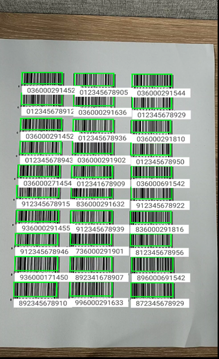
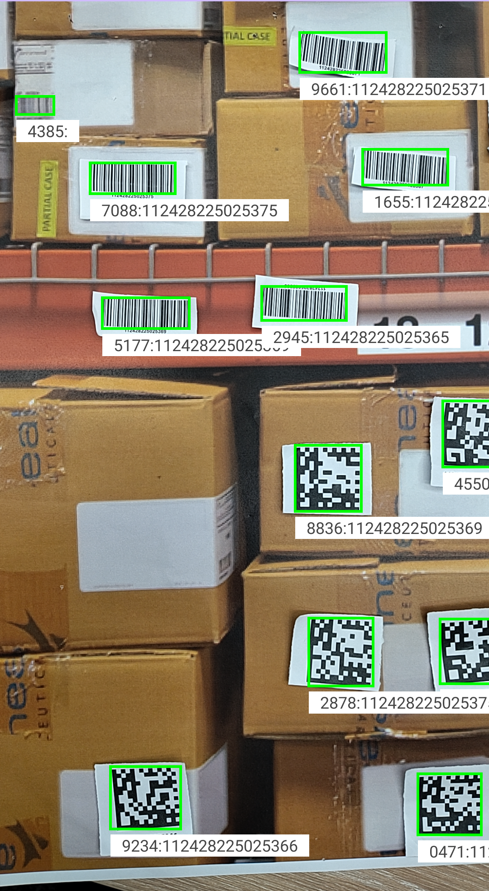
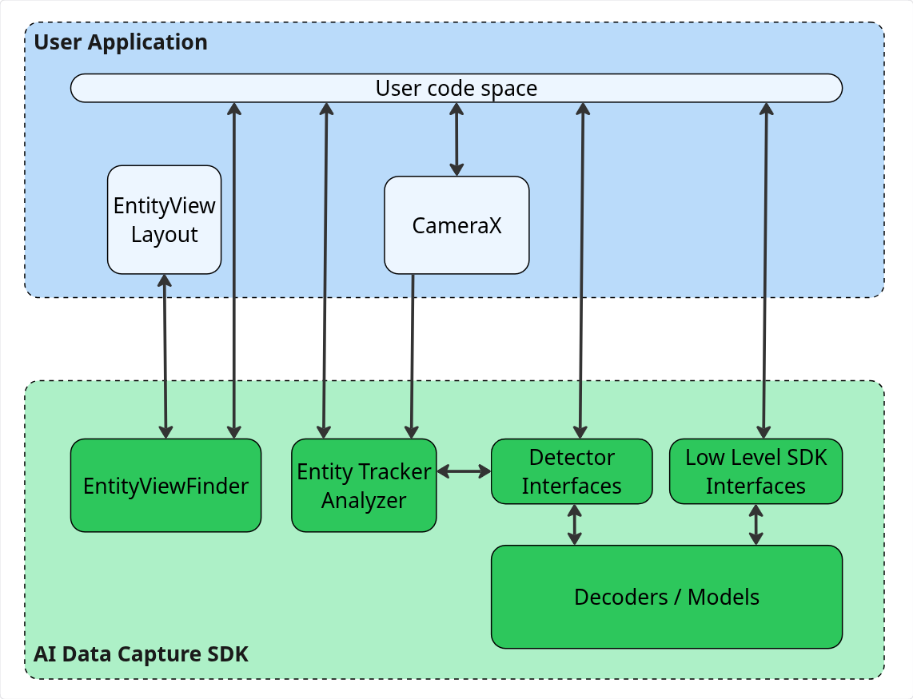
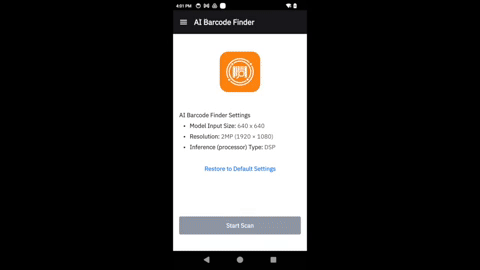

Overview
The Zebra AI Data Capture SDK enables Java and Kotlin developers to create computer vision applications on Zebra mobile computers, offering tools and resources for both experienced and novice AI professionals to leverage the AI capabilities of Zebra devices.
As part of Zebra’s Mobile Computing AI Suite, which includes various AI Models tailored for enterprise use cases, the SDK offers APIs to use these models. Developers can pass frames or images from the camera or other source to the models using traditional methods or they can accelerate development with CameraX Analyzers. One such offering is the EntityTrackerAnalyzer, which enables developers to quickly and easily build CameraX-based applications for tracking Entities such as barcodes or text.
The AI Data Capture SDK also offers a built-in ViewFinder (EntityViewfinder), capable of processing and rendering the interactive Entities generated during the session.
Key Benefits:
- Optimized for Peak Performance on Zebra Devices - The AI Suite Models and the AI Data Capture SDK are specifically fine-tuned to harness the full potential of Zebra’s mobile computers, ensuring maximum efficiency and performance.
- Effortless Integration Across Devices - Developers can leverage trained AI Suite Models on Zebra devices, simplifying the integration of AI vision into enterprise applications without the need for custom model training.
- Simplified Development Workflow - The AI Data Capture SDK integrates effortlessly with the CameraX framework, streamlining the development of vision-based applications and minimizing development complexity. For more information, refer to EntityTrackerAnalyzer and EntityViewfinder.
SDK Capabilities
SDK capabilities:
 |
 | ||
| Automatically detects all barcodes within an image, eliminating the need for individual scans. An augmented reality overlay highlights barcodes on labels, boxes, and shelf tags for decoding. | Identifies products on shelves, enabling tasks such as locating a specific product, determining restock needs, and processing Point of Sale (POS) sales. Adapts to various aisle widths with flexible reading distances. | Builds and stores detailed visual data about retail products, enhancing inventory management. This process typically follows the use of Shelf Localizer, which detects products in images, crops them and submits them for recognition. | Extracts and stores key product descriptors in a database, allowing the Product Recognizer model to identify products within an image. |
|  |  |
|
| Detects and recognizes text and characters in an image, converting it into words with high accuracy. Supports various fonts, font sizes, orientations, and lighting conditions. | Detects, decodes, recognizes and tracks Entities such as barcodes, text, shelves or products in real-time using images or video, with built-in tracking that assigns persistent IDs for linking actions to entities. |
A built-in viewfinder designed to deliver a customizable and interactive camera viewfinder interface. |
Each of these capabilities can be used individually or combined to streamline tasks across various industries.
Barcode Localizer
Barcode Localizer detects 1D and 2D barcodes in images, suitable for various use cases such as identifying barcodes on product boxes, shelves and shipping labels.
Product and Shelf Localizer
Product and Shelf Localizer detects and identifies objects on retail shelves, aiding inventory management, optimizing space and ensuring accurate labeling. The types of objects detected include:
- Products - Identifies individual products on the shelf, facilitating inventory tracking and automating stock checks.
- Shelf Labels - Detects and reads shelf labels, ensuring that products are accurately priced and labeled.
- Peg Labels - Recognizes peg labels used for hanging products, aiding in efficient product organization.
- Shelves - Detects the presence and structure of shelves themselves, helping in understanding shelf layouts and optimizing space usage.
These localizers are usually followed by a decoding and recognition phase:
- Barcode Localizer - The image, along with its localized bounding boxes, can be passed on to the
BarcodeDecoderto decode barcode data. Both detection and decoding can be performed simultaneously with the use of theprocess()API. - Product and Shelf Localizer - The bounding boxes identified by the localizer can be used to recognize the products.
Product Recognition
Product Recognition builds a database of stored products (product enrollment), enabling their recognition for use cases such as inventory tracking and price compliance. The Feature Extractor isolates key features from images, generating descriptors - vectors of float values that capture an item's characteristics - and stores them in Feature Storage to enable product recognition. After a database of recognizable products is established, the Product Recognizer performs semantic searches to locate matching descriptors, predicting the identities of products on the shelf.
Barcode Decoder
The Barcode Decoder is designed to decodes various types of barcodes detected within images. It utilizes the Barcode Localizer to first identify barcode locations and can decode barcodes from either entire images or specific regions, accommodating both single and multiple barcodes per image. Barcode Decoder methods facilitate simultaneous localization and decoding in a single operation. Additionally, the SDK includes a CameraX-compatible EntityTrackerAnalyzer, which detects, decodes, and tracks Entities such as Barcodes.
Text OCR
The Text OCR model detects and decodes text characters in images, offering suggestions for recognized characters or words. It adapts to various fonts and input sizes, allowing for effective text recognition at different distances. Detected words can be grouped into 'lines' or 'paragraphs.'
EntityTrackerAnalyzer
EntityTrackerAnalyzer is a CameraX-compatible implementation of the ImageAnalysis.Analyzer interface, designed for real-time detection, decoding, recognition, and tracking of Entities using still images or video frames. An Entity represents any element detectable by the AI Data Capture SDK, such as a barcodes, text, shelves or products, enabling various user applications. The analyzer includes built-in tracking capabilities, assigning a unique track ID to each Entity that persists as long as the Entity remains within view, allowing developers to link visual or operational actions to the tracked entities. Seamlessly integrating with CameraX, the EntityTrackerAnalyzer processes image frames using a series of detectors to deliver aggregated Entity tracking results, efficiently handling asynchronous tasks and lifecycle events for smooth operation within applications.
Note: Currently, EntityTrackerAnalyzer is designed to detect, decode, and track barcodes.
EntityViewfinder
The EntityViewfinder is a built-in, customizable viewfinder that serves as a CameraX preview, with the ability to render Entities. It offers an enhanced user experience compared to the default PreviewView. It offers seamless integration into XML-based UI layouts and configuration of attributes such as zoom levels, flash states, and button visibility. It also supports features like drag-and-drop repositioning and enforces minimum size constraints for optimal usability. It consists of two key components:
- EntityView - Responsible for rendering the visual UI, including essential controls such as zoom, flash, and resizing.
- EntityViewController - Manages operations such as camera preview, entity rendering, and user interactions.
For advanced customization, developers can use StylePen implementations to render bounding boxes or icons around detected entities. This makes the EntityViewfinder a versatile tool for applications requiring real-time visual feedback and interaction.
|  |
| Components of AI Data Capture SDK |
Getting Started
Get Started with Zebra's Mobile Computing AI Suite
Follow these steps to build applications with the AI Data Capture SDK:
- Download the required model for the component you plan to use:
- Download the AI Data Capture SDK to integrate the functionality into your Android project.
- Access the developer resources for implementation guidance and API references:
- Developer guides and API references:
- Quick-start sample - Source code to get started with building your first AI Suite application.
- Explore Demo Apps - Test real-world scenarios using the Zebra Showcase App. For installation instructions, click here. The source code is available to help developers build production-ready applications faster:
- AI Barcode Finder - A demo showcasing multi-barcode finder application for detecting and interacting with actionable barcodes.
- AI Data Capture Demo - A demo highlighting the main features and configurations of AI Suite.
|  |  |
|
| AI Barcode Finder Demo | AI Data Capture Demo |